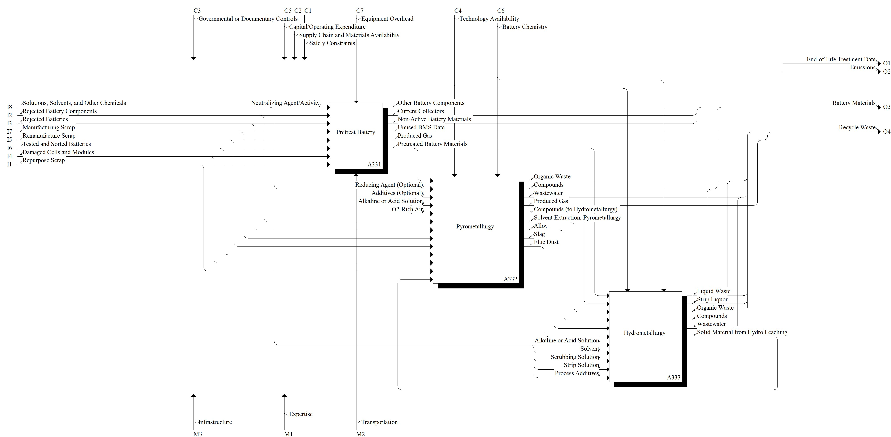

Model: Recycle

Description
Notes:None
Definitions:
Recycling - process of transforming waste materials into a reusable form which may be similar to the original product or not. Adapted from ISO 24161:2022, 3.1.3.10.
Standards:
SAE J2974_201902, Technical Information Report on Automotive Battery Recycling
SAE J3071_201604, Automotive Battery Recycling Identification and Cross Contamination Prevention
SAE J2984_202109, Chemical Identification of Transportation Batteries for Recycling
SERI R2 Standard, Responsible Recycling ("R2") Standard for Electronics Recyclers
e-Stewards Standard, Responsible Recycling and Reuse of Electronic Equipment
ISO 8887-1:2017, Technical product documentation - Design for manufacturing, assembling, disassembling and end-of-life processing - Part 1: General concepts and requirements
References:
Baum ZJ, Bird RE, Yu X, Ma J (2022) Lithium-ion battery recycling- overview of techniques and trends. ACS Energy Letters, 7(2):712-719. https://doi.org/10.1021/acsenergylett.1c02602
Bird R, Baum ZJ, Yu X, Ma J (2022) The regulatory environment for lithium-ion battery recycling. ACS Energy Letters, 7(2):736-740. https://doi.org/10.1021/acsenergylett.1c02724
Chen M, Ma X, Chen B, Arsenault R, Karlson P, Simon N, Wang Y (2019) Recycling end-of-life electric vehicle lithium-ion batteries. Joule, 3(11), 2622-2646. https://doi.org/10.1016/j.joule.2019.09.014
Gaines L (2014) The future of automotive lithium-ion battery recycling: Charting a sustainable course. Sustainable Materials and Technologies, 1, 2-7. https://doi.org/10.1016/j.susmat.2014.10.001
Gaines L, Richa K, Spangenberger J (2018) Key issues for Li-ion battery recycling. MRS Energy & Sustainability, 5, E14. https://doi.org/10.1557/mre.2018.13
Georgi-Maschler T, Friedrich B, Weyhe R, Heegn H, Rutz M (2012) Development of a recycling process for Li-ion batteries. Journal of power sources, 207, 173-182. https://doi.org/10.1016/j.jpowsour.2012.01.152
Harper G, Sommerville R, Kendrick E, Driscoll L, Slater P, Stolkin R, Walton A, Christensen P, Heidrich O, Lambert S, Abbott A, Ryder K, Gaines L, Anderson P (2019) Recycling lithium-ion batteries from electric vehicles. Nature, 575(7781), 75-86. https://doi.org/10.1038/s41586-019-1682-5
Ma X, Meng Z, Bellonia MV, Spangenberger J, Harper G, Gratz E, Olivetti E, Arsenault R, Wang Y (2025) The evolution of lithium-ion battery recycling. Nature Reviews Clean Technology, 1(1), 75-94. https://doi.org/10.1038/s44359-024-00010-4
Neumann J, Petranikova M, Meeus M, Gamarra JD, Younesi R, Winter M, Nowak S (2022) Recycling of lithium-ion batteries—current state of the art, circular economy, and next generation recycling. Advanced Energy Materials, 12(17), 2102917. https://doi.org/10.1002/aenm.202102917
Pinegar H, Smith YR (2019) Recycling of end-of-life lithium ion batteries, Part I: Commercial processes. Journal of Sustainable Metallurgy, 5(3), 402-416. https://doi.org/10.1007/s40831-019-00235-9
Parent Activity: Recycle
Disclaimer: Certain commercial equipment, instruments, or materials are identified in this documentation to foster understanding. Such identification does not imply recommendation or endorsement by the National Institute of Standards and Technology, nor does it imply that the materials or equipment identified are necessarily the best available for the purpose.